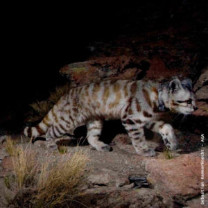

Ocelote
- Nombre científico: Leopardus jacobita
- Tiene un largo que oscila entre los 57 y los 65 cm
- Tiene un peso que va desde los 4 a los 8 kg.
Presenta un pelaje muy largo y grueso, especialmente en lo dorsal, y un diseño que consiste en manchas color café amarillentas con forma variable de fajas, estrías o puntos sobre un fondo grisáceo o plomizo, que se disponen de manera vertical en ambos flancos del cuerpo, dando la apariencia de franjas continuas. La cola es muy larga –siendo un 70% del resto del cuerpo– gruesa y fajada con seis a nueve anillos oscuros que se ensanchan hacia la punta. La parte ventral del cuerpo es blanca, salpicada con pintas negras, al igual que la parte interna de las patas, mejillas, labios y la zona periocular. Las patas traseras y delanteras del Gato Andino son anchas, lo que le permite moverse bien entre las rocas y la nieve. Tienen bandas oscuras más delgadas que no llegan a formar anillos completos.
El Gato Andino es un felino solitario, raro y muy difícil de ver. Ha sido observado durante el día, pero cámaras trampa lo han registrado también por la noche, cuando probablemente le resulta más fácil obtener sus presas. Se supone, en base a estudios, que su actividad es más frecuente durante la noche, siendo también importante en la primera mitad del día.